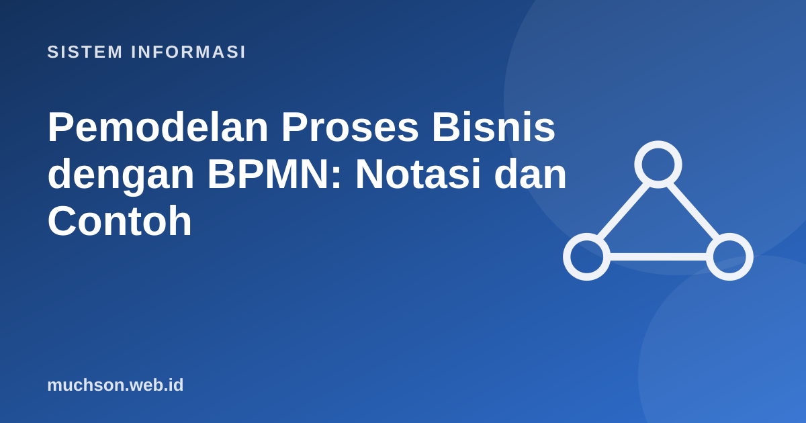

Beranda › Artikel › Sistem Informasi
Sistem InformasiPemodelan Proses Bisnis dengan BPMN: Notasi dan Contoh
Sebelum mengotomasi sebuah proses, kita harus memahaminya. Banyak proyek SI mengotomasi proses yang buruk dan hasilnya adalah proses buruk yang lebih cepat. BPMN (Business Process Model and Notation) adalah standar OMG untuk menggambarkan proses sehingga bisnis dan teknologi memiliki bahasa gambar yang sama.
Sebaiknya sudah paham: diagram aktivitas, DFD

Setelah membaca dan mencoba materi ini, Anda mampu:
- membedakan proses bisnis dari fungsi dan prosedur
- membaca dan menggambar elemen inti BPMN: event, activity, gateway, sequence flow
- memakai pool, lane, dan message flow
- memodelkan AS-IS dan TO-BE, serta mengidentifikasi pemborosan
- menerapkan praktik penamaan dan kerapian model
Elemen inti
| Elemen | Bentuk | Fungsi | Contoh |
|---|---|---|---|
| Event awal | Lingkaran tipis | Memulai proses | Permintaan diterima |
| Event akhir | Lingkaran tebal | Mengakhiri alur | Pesanan selesai |
| Task (aktivitas) | Persegi bersudut bulat | Pekerjaan yang dilakukan | Periksa stok |
| Gateway | Belah ketupat | Percabangan atau penggabungan alur | Stok cukup? |
| Sequence flow | Panah solid | Urutan dalam satu pool | Antar aktivitas |
| Message flow | Panah putus-putus | Pesan antar pool (organisasi) | Pemesanan ke pemasok |
Pool dan lane
Pool mewakili satu peserta (organisasi), lane membagi pool menjadi peran atau unit di dalamnya. Komunikasi antar pool memakai message flow (garis putus-putus), tidak boleh memakai sequence flow.
AS-IS dan TO-BE
| Pemborosan pada AS-IS | Perbaikan pada TO-BE |
|---|---|
| Formulir kertas disalin ulang ke sistem | Formulir digital langsung masuk basis data |
| Tiga tingkat persetujuan untuk nilai kecil | Persetujuan berjenjang berdasarkan nilai |
| Menunggu surat tercetak ditandatangani | Tanda tangan elektronik |
| Pemeriksaan stok dilakukan manual setiap pesanan | Cek stok otomatis pada sistem |
Praktik pemodelan yang baik
BPMN dapat dieksekusi oleh mesin proses (Camunda, Flowable, Bonita) bila model dilengkapi detail teknis. Namun tujuan utama bagi kebanyakan tim adalah komunikasi dan analisis, bukan eksekusi.
1. Modelkan proses "pendaftaran mahasiswa baru online" dari sudut pandang calon mahasiswa dan panitia.
2. Kapan memakai gateway paralel?
3. Apa perbedaan BPMN dan diagram alir biasa?
4. Identifikasi dua pemborosan pada: "Staf menulis laporan di kertas lalu mengetik ulang ke Excel dan mengirim lewat surel".
- BPMN: event, task, gateway, sequence flow, message flow, pool dan lane.
- AS-IS memetakan proses nyata; TO-BE merancang proses yang diperbaiki.
- Beri nama kata kerja, label jalur gateway, dan jaga model tetap terbaca.
- Memperbaiki proses sebelum mengotomasi lebih bernilai daripada mengotomasi proses buruk.
Tanya jawab
Apa bedanya BPMN dengan diagram aktivitas UML?
Alat apa yang dipakai?
Apa itu BPM dan BPR?
Referensi
- Object Management Group: BPMN 2.0 Specification
- bpmn.io: pemodel BPMN sumber terbuka
- Marlon Dumas et al., Fundamentals of Business Process Management (Springer)
- Kenneth C. Laudon dan Jane P. Laudon, Management Information Systems: Managing the Digital Firm (Pearson)